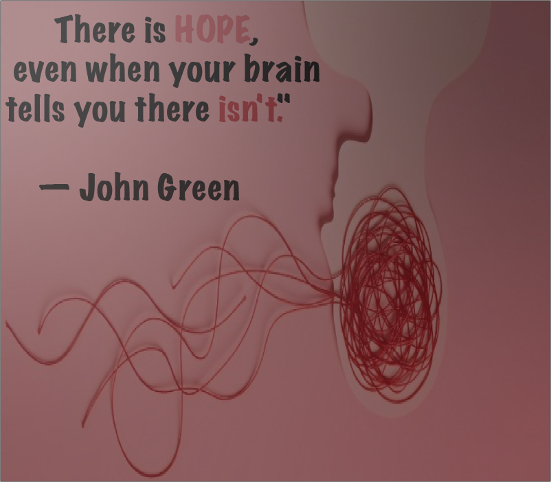

What is Anxiety
Mental health our emotional, psychological, and social well being.
Components: It covers emotional (feelings), psychological (thoughts/logic), and social (relationships) health.
Functionality: Good mental health enables people to realize their abilities, cope with normal life stresses,
work productively, and contribute to their communities.
Why is mental health important?
Mental health dictates not just how we behave and feel but how we see the world around us.
This makes Mental health incredibly important and VITAL for your survival and wellbeing; This makes mental
health important for the survival of humanity as a whole.
How can I treat my mental health?
Every single person on this planet including you is different.
Some people may need certain types of therapy depending on their condition and preference.
Our team has listed below links to some of the best therapists in the U.S.!
Everyone needs help sometimes and trust me we don't judge, if you need help get help now!
Online private therapy!
Local in person therapy near you!
Know your mind:
The ins and outs of mental health and how to get help
